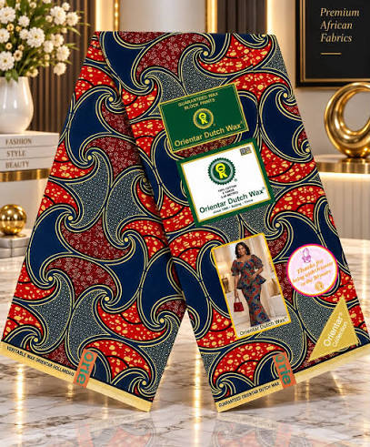

Bringing African Fabric and Elegance to the World
Ankara Palace was founded on a simple belief: the richness of Nigerian and African textiles deserves a shopping experience as refined as the fabrics themselves. We curate premium Ankara, Aso-Oke, Adire and lace, connecting discerning customers with authentic, high-quality fabrics.


Fabrics Rooted in Culture
Every fabric at Ankara Palace carries a story — of Yoruba weavers, indigo dyers, and artisans whose craft has been passed down through generations. We work closely with trusted mills and artisans to preserve the authenticity of each textile while presenting it with a modern, elegant sensibility.
From bold Ankara wax prints to handwoven Aso-Oke, every piece in our catalogue is inspected for weave, colour depth and durability. We believe premium quality is not a luxury — it is the standard.
What Drives Us
Our Mission
To make premium African fabrics accessible to customers across Nigeria and beyond, through a shopping experience that honours the heritage of each textile and the expectations of the modern customer.
Our Vision
To become Africa's most trusted online destination for traditional and contemporary fabrics — a platform where heritage, quality and elegance meet.
The Principles Behind Every Order
Quality First
We inspect every fabric before it reaches our customers. No shortcuts, no compromises.
Authenticity
We work directly with trusted artisans and mills to preserve the integrity of each textile.
Customer Care
Every customer is treated with respect. We are here before, during and after purchase.
Cultural Pride
We celebrate the heritage behind African textiles and share that story with the world.
Transparency
Clear pricing, honest descriptions and reliable order tracking — always.
Reliability
Timely dispatch and careful packaging so your fabric arrives exactly as expected.